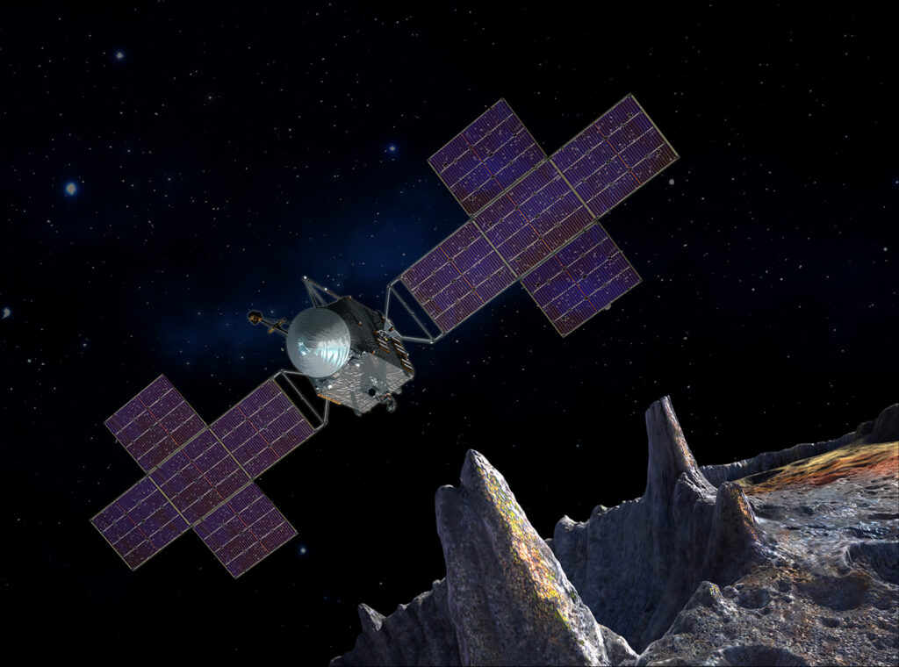

Psyche Satellite Mission AR Experience
Understand the Mission.
See Psyche's course,
from launch to arrival.
Explore the Mission.
Clicking the Launch AR Experience button will start an interactive experience that will explore the Psyche Mission.
Explore the current mission progress
See the distance traveled.
Countdown to the arrival.

Explore the spacecraft with your phone.
Checkout the spacecraft's equipment
Learn of the mission's experiments
Explore the full mission.
Watch the launch of the spacecraft.
View the approach of Psyche.
Watch as we uncover the origins of Psyche
This work was created in partial fulfillment of Arizona State University Capstone Course SER 401. The work is a result of the Psyche Student Collaborations component of NASA’s Psyche Mission (https://psyche.asu.edu).
“Psyche: A Journey to a Metal World” [Contract number NNM16AA09C] is part of the NASA Discovery Program mission to solar system targets. Trade names and trademarks of ASU and NASA are used in this work for identification only. Their usage does not constitute an official endorsement, either expressed or implied, by Arizona State University or National Aeronautics and Space Administration. The content is solely the responsibility of the authors and does not necessarily represent the official views of ASU or NASA.